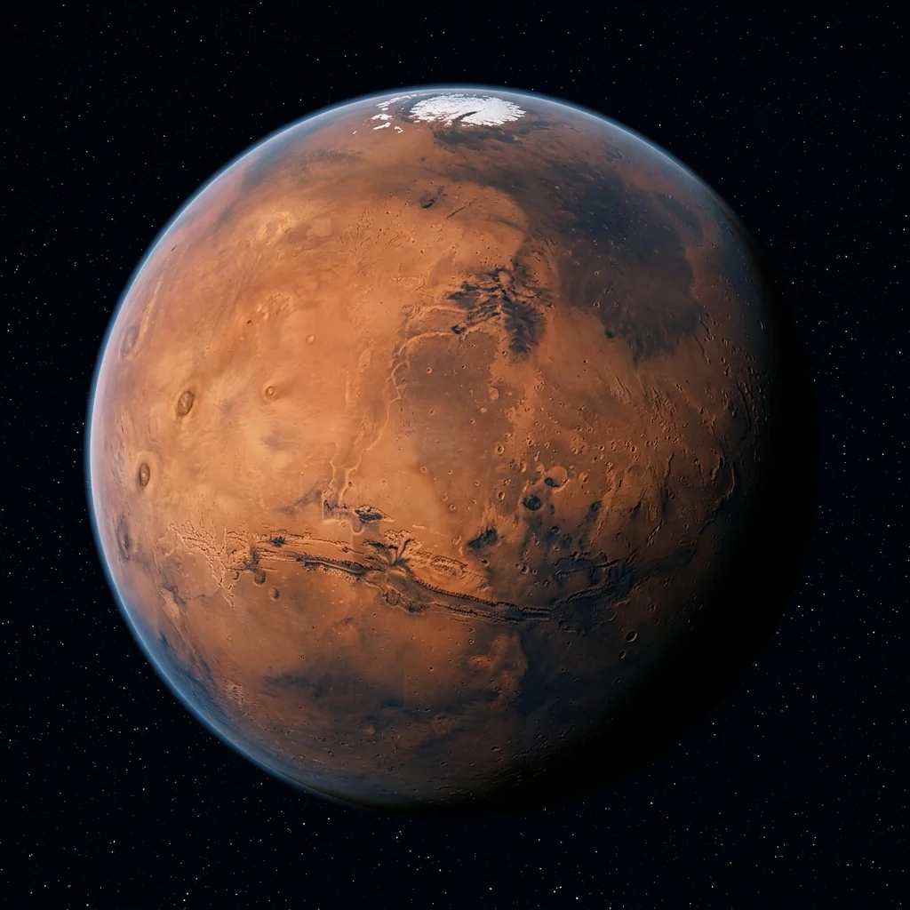

Solar system voyage · Stop 4 of 10
Trace a canyon across the desert planet. Ancient landscapes hold clues to a wetter past.
1.52 AU from the Sun · mean distance, rounded
Investigate the sunlight
Spacecraft-inspired view. Images are not a live view; sizes and star positions are not to scale. Select an image to examine it with the class.
Predict first: move twice as far from the Sun. How much light reaches the same area?
distance from the Sun
sunlight per m², compared with Earth
one-way light travel from the Sun
1 AU ≈ 150 million km. Model: sunlight ∝ 1 / distance²; light takes about 8.32 minutes per AU. These are Sun-to-location values, not Earth-to-spacecraft communication times. Atmospheres, temperature, and orbital eccentricity are not modeled. NASA solar system reference · NASA planetary distance table.
Why must a Mars lander make its own decisions during descent?
Radio signals travel at the speed of light, but interplanetary distances still introduce minutes of delay. A landing cannot wait for a round trip to Earth.
Explain your answer using one observation from the image or lesson and one measurement from the sunlight experiment.
Trace a canyon across the desert planet. Ancient landscapes hold clues to a wetter past.
Mars is the fourth planet from the Sun and a desert world with a thin carbon dioxide atmosphere. Its characteristic reddish tint comes from oxidized iron minerals (rust) in its regolith, harboring geological giants like Olympus Mons—the solar system's largest volcano—and the grand canyon system of Valles Marineris.
Landing a one-ton robotic rover on Mars requires decelerating from 12,000 miles per hour to a gentle stop in under seven minutes. Because radio transmissions take several minutes to reach Earth, depending on the planets’ positions, no human can pilot the craft live. The rover relies entirely on autonomous flight software, terrain-relative navigation cameras, supersonic parachutes, and a rocket-powered sky crane.